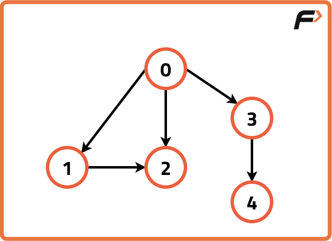
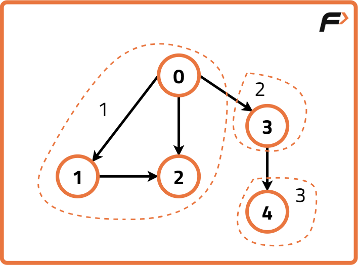
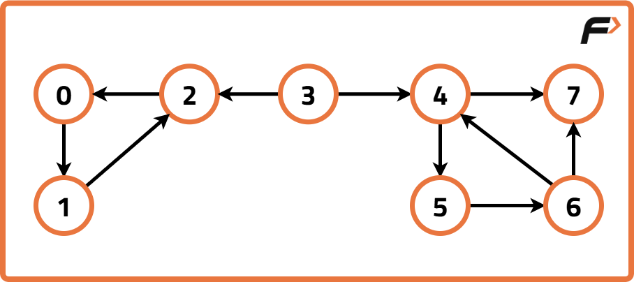
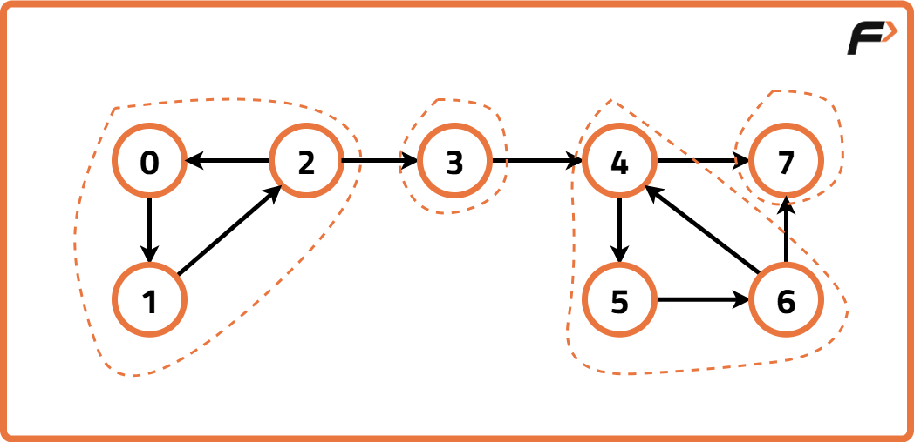

Archived from https://takeuforward.org/graph/strongly-connected-components-kosarajus-algorithm-g-54/
Problem Statement: Given a Directed Graph with V vertices (Numbered from 0 to V-1) and E edges,
Find the number of strongly connected components in the graph..
Examples
Input Format:

Result: 3
Explanation: Three strongly connected components are marked below:

Input Format:

Result: 4
Explanation: Four strongly connected components are marked below:

Disclaimer: Here is the practice link to help you assess your knowledge better. It's highly recommend trying to
solve it before looking at the solution.
Approach
Algorithm
In a directed graph, strongly connected components (SCCs) are subsets of nodes where every
node is reachable from every other node within the same subset. Kosaraju’s Algorithm
efficiently finds these SCCs by leveraging the concept of graph transposition and finishing
times in DFS.
The key idea is: if we perform a DFS on the graph and record the finishing times of nodes,
then by reversing the graph and doing DFS in the order of decreasing finishing times, we can
group nodes into SCCs.
Approach:
Perform a DFS traversal on the graph to fill nodes into a stack according to their
finishing times (nodes that finish later are pushed later).
Reverse (transpose) the graph by reversing the direction of every edge.
Perform DFS again on the transposed graph, in the order defined by the stack. Each DFS
traversal gives one strongly connected component.
Count the number of DFS calls on the transposed graph, which equals the number of SCCs.
Code
#include <bits/stdc++.h>
using namespace std;
class Solution {
private:
// Step 1: Perform DFS and store nodes in stack by finishing time
void dfs(int node, vector<int> &vis, vector<int> adj[], stack<int> &st) {
vis[node] = 1;
for (auto it : adj[node]) {
if (!vis[it]) {
dfs(it, vis, adj, st);
}
}
// Push the node into stack after visiting all neighbors
st.push(node);
}
// Step 2: Perform DFS on transposed graph
void dfs3(int node, vector<int> &vis, vector<int> adjT[]) {
vis[node] = 1;
for (auto it : adjT[node]) {
if (!vis[it]) {
dfs3(it, vis, adjT);
}
}
}
public:
// Function to find number of strongly connected components
int kosaraju(int V, vector<int> adj[]) {
vector<int> vis(V, 0);
stack<int> st;
// Step 1: Do DFS to fill stack by finishing times
for (int i = 0; i < V; i++) {
if (!vis[i]) {
dfs(i, vis, adj, st);
}
}
// Step 2: Build the transpose graph
vector<int> adjT[V];
for (int i = 0; i < V; i++) {
vis[i] = 0; // reset visited
for (auto it : adj[i]) {
adjT[it].push_back(i); // reverse edge
}
}
// Step 3: Process stack to count SCCs
int scc = 0;
while (!st.empty()) {
int node = st.top();
st.pop();
if (!vis[node]) {
scc++;
dfs3(node, vis, adjT);
}
}
return scc;
}
};
int main() {
int n = 5;
int edges[5][2] = {
{1, 0}, {0, 2},
{2, 1}, {0, 3},
{3, 4}
};
vector<int> adj[n];
for (int i = 0; i < 5; i++) {
adj[edges[i][0]].push_back(edges[i][1]);
}
Solution obj;
int ans = obj.kosaraju(n, adj);
cout << "The number of strongly connected components is: " << ans << endl;
return 0;
}
import java.util.*;
class Solution {
// Step 1: Perform DFS and store nodes in stack by finishing time
private void dfs(int node, int[] vis, List<Integer>[] adj, Stack<Integer> st) {
vis[node] = 1;
for (int it : adj[node]) {
if (vis[it] == 0) {
dfs(it, vis, adj, st);
}
}
st.push(node);
}
// Step 2: Perform DFS on transposed graph
private void dfs3(int node, int[] vis, List<Integer>[] adjT) {
vis[node] = 1;
for (int it : adjT[node]) {
if (vis[it] == 0) {
dfs3(it, vis, adjT);
}
}
}
// Function to find number of strongly connected components
public int kosaraju(int V, List<Integer>[] adj) {
int[] vis = new int[V];
Stack<Integer> st = new Stack<>();
// Step 1: Do DFS to fill stack
for (int i = 0; i < V; i++) {
if (vis[i] == 0) {
dfs(i, vis, adj, st);
}
}
// Step 2: Build transpose graph
List<Integer>[] adjT = new ArrayList[V];
for (int i = 0; i < V; i++) {
adjT[i] = new ArrayList<>();
}
Arrays.fill(vis, 0);
for (int i = 0; i < V; i++) {
for (int it : adj[i]) {
adjT[it].add(i);
}
}
// Step 3: Process stack to count SCCs
int scc = 0;
while (!st.isEmpty()) {
int node = st.pop();
if (vis[node] == 0) {
scc++;
dfs3(node, vis, adjT);
}
}
return scc;
}
}
class Main {
public static void main(String[] args) {
int n = 5;
int[][] edges = {
{1, 0}, {0, 2},
{2, 1}, {0, 3},
{3, 4}
};
List<Integer>[] adj = new ArrayList[n];
for (int i = 0; i < n; i++) adj[i] = new ArrayList<>();
for (int i = 0; i < edges.length; i++) {
adj[edges[i][0]].add(edges[i][1]);
}
Solution obj = new Solution();
int ans = obj.kosaraju(n, adj);
System.out.println("The number of strongly connected components is: " + ans);
}
}
class Solution:
# Step 1: Perform DFS and store nodes in stack by finishing time
def dfs(self, node, vis, adj, st):
vis[node] = 1
for it in adj[node]:
if not vis[it]:
self.dfs(it, vis, adj, st)
st.append(node)
# Step 2: Perform DFS on transposed graph
def dfs3(self, node, vis, adjT):
vis[node] = 1
for it in adjT[node]:
if not vis[it]:
self.dfs3(it, vis, adjT)
# Function to find number of strongly connected components
def kosaraju(self, V, adj):
vis = [0] * V
st = []
# Step 1: Do DFS to fill stack
for i in range(V):
if not vis[i]:
self.dfs(i, vis, adj, st)
# Step 2: Build transpose graph
adjT = [[] for _ in range(V)]
vis = [0] * V
for i in range(V):
for it in adj[i]:
adjT[it].append(i)
# Step 3: Process stack to count SCCs
scc = 0
while st:
node = st.pop()
if not vis[node]:
scc += 1
self.dfs3(node, vis, adjT)
return scc
if __name__ == "__main__":
n = 5
edges = [
[1, 0], [0, 2],
[2, 1], [0, 3],
[3, 4]
]
adj = [[] for _ in range(n)]
for u, v in edges:
adj[u].append(v)
obj = Solution()
ans = obj.kosaraju(n, adj)
print("The number of strongly connected components is:", ans)
class Solution {
// Step 1: Perform DFS and store nodes in stack by finishing time
dfs(node, vis, adj, st) {
vis[node] = 1;
for (let it of adj[node]) {
if (!vis[it]) {
this.dfs(it, vis, adj, st);
}
}
st.push(node);
}
// Step 2: Perform DFS on transposed graph
dfs3(node, vis, adjT) {
vis[node] = 1;
for (let it of adjT[node]) {
if (!vis[it]) {
this.dfs3(it, vis, adjT);
}
}
}
// Function to find number of strongly connected components
kosaraju(V, adj) {
let vis = new Array(V).fill(0);
let st = [];
// Step 1: Do DFS to fill stack
for (let i = 0; i < V; i++) {
if (!vis[i]) {
this.dfs(i, vis, adj, st);
}
}
// Step 2: Build transpose graph
let adjT = Array.from({ length: V }, () => []);
vis.fill(0);
for (let i = 0; i < V; i++) {
for (let it of adj[i]) {
adjT[it].push(i);
}
}
// Step 3: Process stack to count SCCs
let scc = 0;
while (st.length > 0) {
let node = st.pop();
if (!vis[node]) {
scc++;
this.dfs3(node, vis, adjT);
}
}
return scc;
}
}
// Driver code
(function main() {
let n = 5;
let edges = [
[1, 0], [0, 2],
[2, 1], [0, 3],
[3, 4]
];
let adj = Array.from({ length: n }, () => []);
for (let [u, v] of edges) {
adj[u].push(v);
}
let obj = new Solution();
let ans = obj.kosaraju(n, adj);
console.log("The number of strongly connected components is:", ans);
})();
Complexity Analysis
Time Complexity: O(V + E), since each node and edge is visited at most twice
(once in the original graph, once in the transposed graph).
Space Complexity: O(V + E), due to the adjacency list, visited array, and
recursion stack.